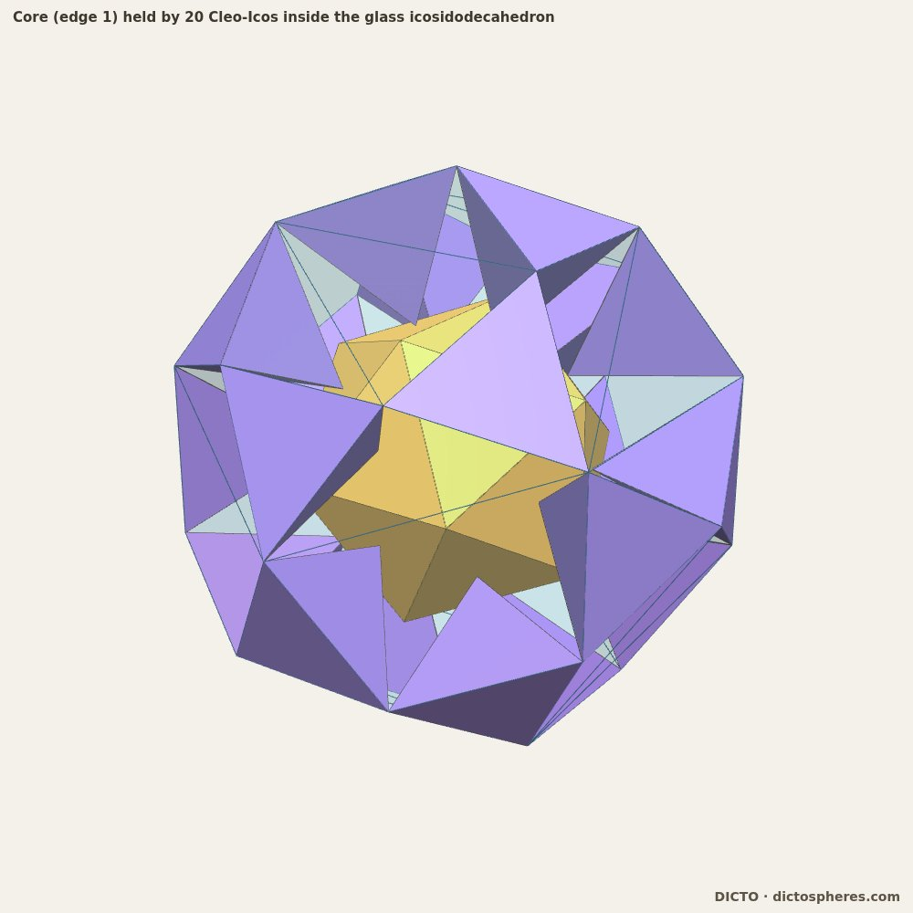
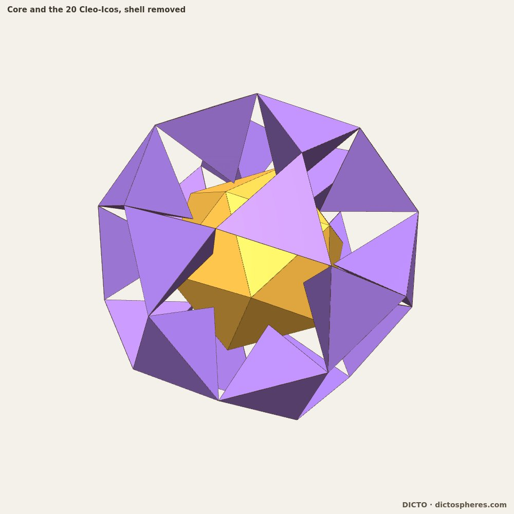
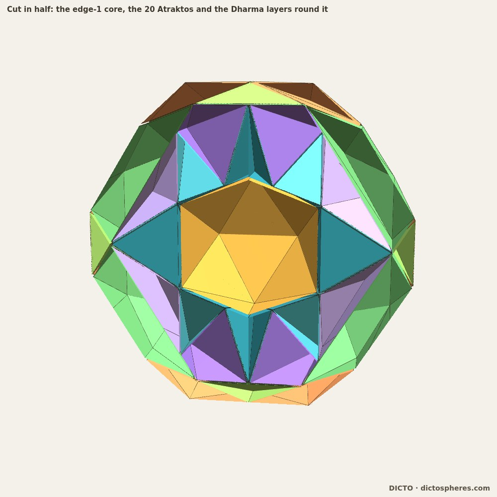
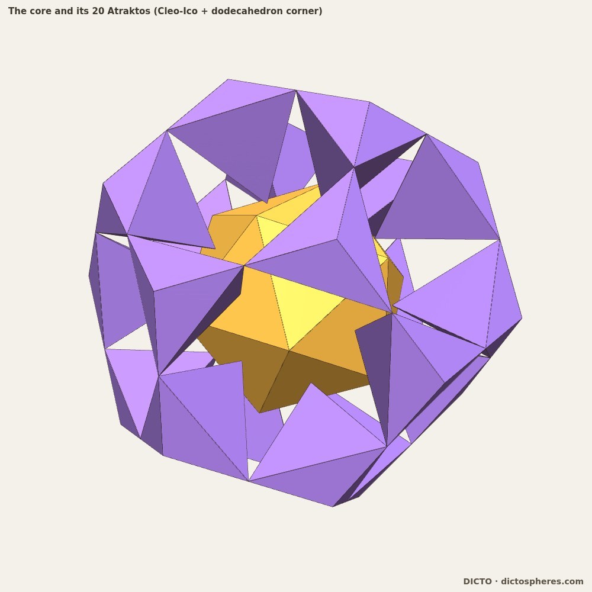
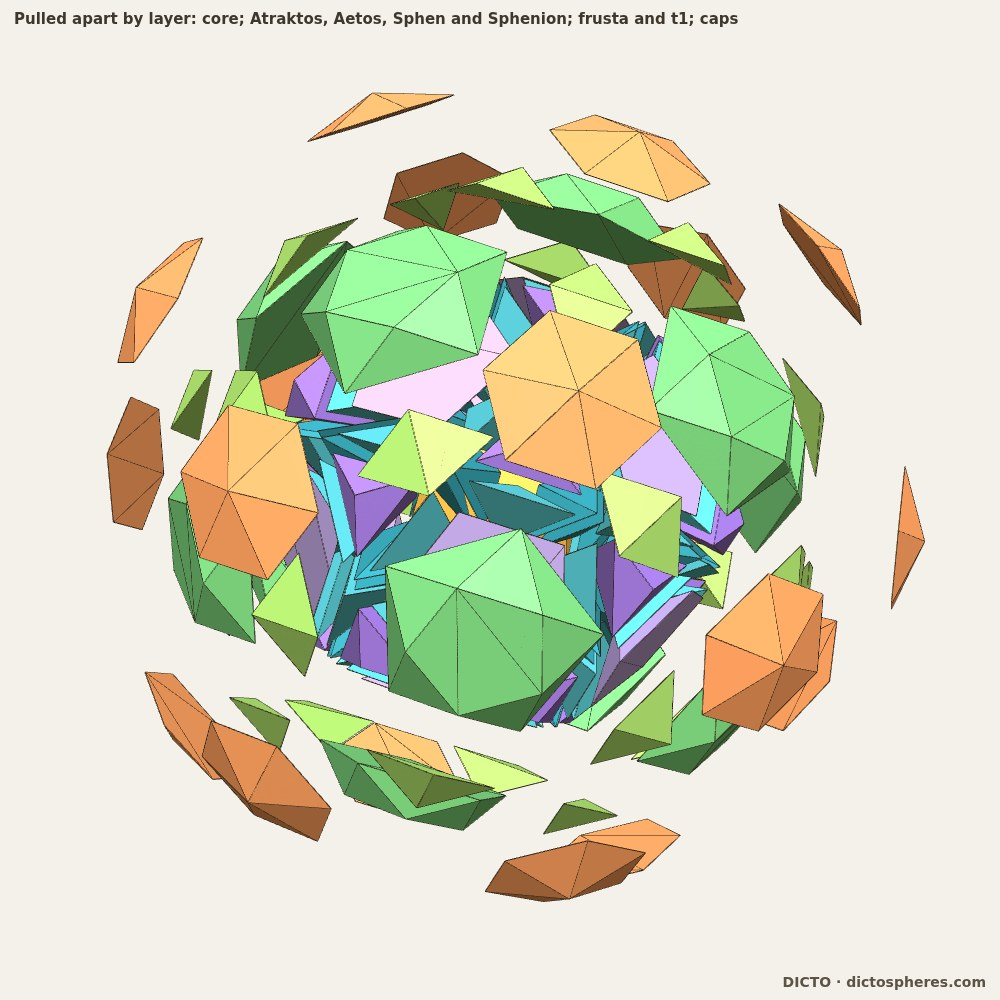
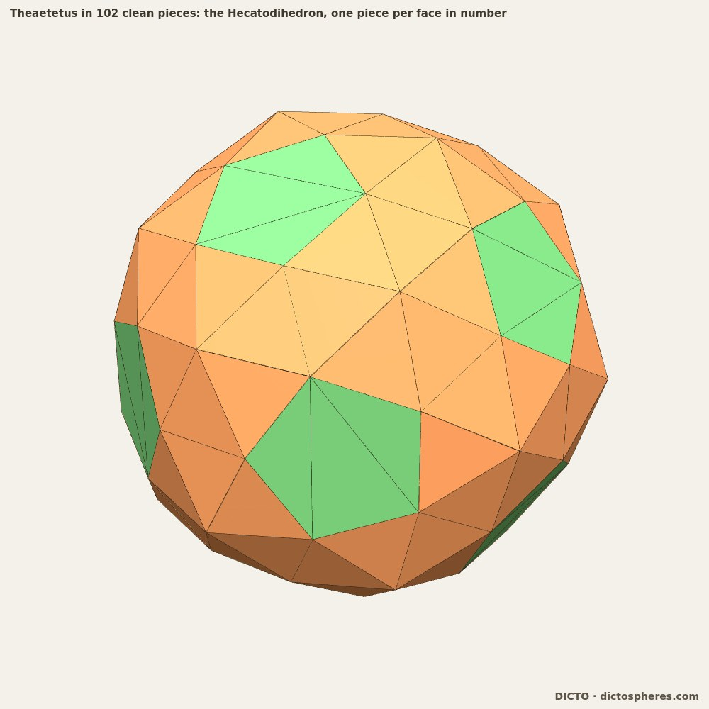
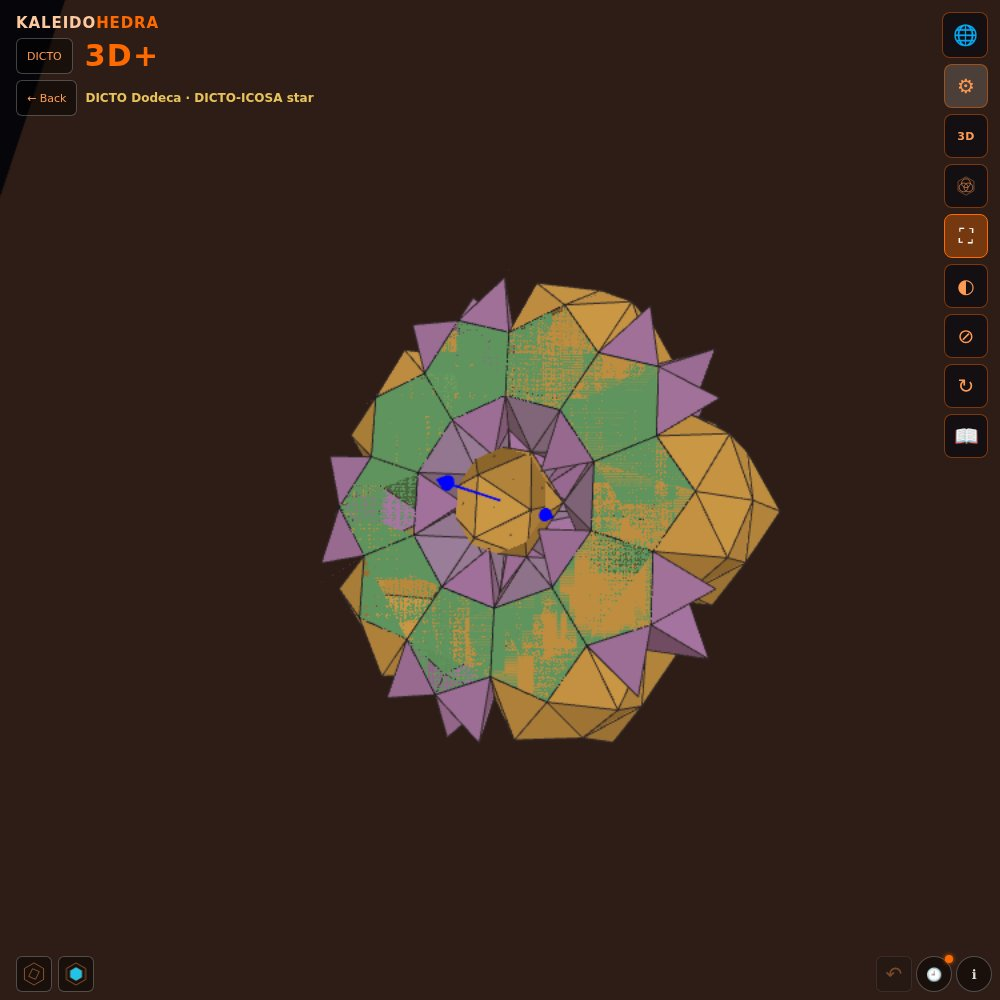

DRAFT 2026-10-15 · NOT FOR RELEASE
An icosahedron held exactly by its Cleo-Icos, grown to the DICTO Hecatodihedron in two exact stories: 215 pieces in closed layers, and 102 clean pieces that cut a dual pair with the same twenty cones
The DICTO-Star is an icosidodecahedron with a regular dodecahedron on each of its 12 pentagons and a tridiminished icosahedron (J63) on each of its 20 triangles, closed exactly in flat space (DICTO DOI: 10.5281/zenodo.23284213). The DICTO-ICOSA star adds a pyramid with all edges 1 on each of its 152 free faces (72 pentagonal pyramids, 80 tetrahedra): 185 regular-faced pieces, no overlaps. Its hollow form removes the central icosidodecahedron, points a pyramid with all edges 1 into the hollow from each of the icosidodecahedron's 32 faces, and rests a core icosahedron (edge 2/√5) on the twelve pentagonal tips.
We checked that hollow exactly. The 32 inward pyramids never overlap (496 pairs, separating axes), and the core is regular with its corners on the twelve tips. But the twenty inward tetrahedra stop short of the core's faces by φ²/√3 − √(2/3) − φ²/√15 = 0.019053, so the core touches at its twelve corners only, and it is loose: turned about a five-fold, three-fold, two-fold or random axis it first touches anything at 13.7°, 14.3°, 13.45° and 13.5°.
A Cleo-Ico is the pyramid on one face of an icosahedron with its apex at the icosahedron's centre (Mackay's unit tetrahedron; our FUJI Family paper, DICTO DOI: 10.5281/zenodo.23357896). With edge 1 its side edges are the icosahedron's circumradius √(10 + 2√5)/4 = 0.951057 and its height is the inradius φ²/(2√3) = 0.755761.
The fit. Stand a Cleo-Ico on each of the 20 triangles of the icosidodecahedron of edge 1, point inward. The triangles lie at distance φ²/√3 from the centre, so every point lands at φ²/(2√3): exactly the inradius of an icosahedron of edge 1 on the five-fold axes, at the centre of its face. The reason is classical: the icosidodecahedron of edge 1 is the rectified icosahedron of edge 2, whose triangles lie in that icosahedron's face planes, at twice the inradius of our core. Measured, the twenty points sit on the twenty face centres to 1·10−16; the Cleo-Icos meet one another only at the shell's corners and the core only at the points.
Locked. A turn of the core tilts some face into its point, and a shift pushes some face into its point. Tested over 303 directions, every turn of 0.5°, 1° and 2° and every shift of 0.001 collides. The contacts are points, so a turn presses in as the square of the angle (depth 2.9·10−5 at 0.5°) and a shift at once. The core is itself twenty Cleo-Icos round its centre, so the hollow then holds forty identical Cleo-Icos, point to base in pairs along the twenty three-fold axes, each loose piece locked by its neighbours (0 free motions in 1 200 shifts and 1 200 turns of each kind). Two edge-1 icosahedra, one whole and one in its twenty points, leave exactly 5 + 2√5 of the hollow empty.
Aetos. The edge-1 core's corners reach 0.951057 and stop 0.425325 short of the twelve pentagonal windows (at √((5 + 2√5)/5) = 1.376382): room for a flat pentagonal pyramid standing on the window with its point on the core's corner. Its side edges come out at 0.951057, the Cleo-Ico's own, so its five side triangles are the Cleo-Ico's side triangle. With the twenty Cleo-Icos and twelve Aetos the core is held at all 32 points; this is the hollow DICTO-ICOSA star now shown in the app.


The icosidodecahedron of edge 1 is exactly the core, the twelve Aetos and twenty triangular antiprisms: over each core face, the solid between it and the parallel shell triangle above (turned 180°, distance φ²/(2√3)). The six side triangles of each antiprism have sides 1, 0.951057, 0.951057, the Cleo-Ico's triangle again, so every holding shape is built from one triangle. Volumes add up exactly (Table 1); no two of the 33 solids overlap; sampled points are each covered once; all 60 contacts between Aetos and antiprisms are whole faces.
Each antiprism holds one Cleo-Ico and is exactly that Cleo-Ico, three Sphen on its shell edges and three Sphenion on its core edges (tetrahedra with edges 1, four of 0.951057 and 1/√3, and 1, three of 0.951057 and two of 1/√3). Exactly, Cleo-Ico : Sphen : Sphenion = 3 : 2 : 1, an antiprism is four Cleo-Icos, and an Aetos is √5 Cleo-Icos. The lengths 1/√3 (from triangle centres) keep Sphen and Sphenion out of the golden kit: neither is AXE, CLEO, FUJI, J2 or a Mosseri–Sadoc tile, and groupings by symmetry (twelve, thirty or twenty pieces) all have dents.
The Spheres of Dharma (DICTO DOI: 10.5281/zenodo.23310833) nest the icosahedral solids exactly, each layer filled by a few repeated pieces. Their first step puts an icosahedron in an icosidodecahedron with edges in ratio φ²/2 = 1.309; ours has ratio 1, the core 1.309 times as large: a new first step. From the icosidodecahedron outward we use Dharma's own layers, scaled by 2/φ: twenty triangular pyramids to the dodecahedron, twelve twisted pentagonal frusta and thirty Mosseri–Sadoc t1 to the truncated icosahedron, and twenty caps to the DICTO Hecatodihedron (DICTO DOI: 10.5281/zenodo.23360858): 102 faces (60 triangles, 30 rhombi, 12 pentagons), 80 corners.
Searching every pair of face-sharing pieces for convex unions found three: a Cleo-Ico with the dodecahedron's corner pyramid on the same triangle (20, symmetric), a Cleo-Ico with one Sphen (60 choices, breaking the symmetry) and a t1 with a frustum (24 choices, not enough for all). DICTO chose the first: the Atraktos, a triangular bipyramid from a core face to a dodecahedron corner. The stations are then 215 pieces in which every layer is a closed solid: core, 12 Aetos, 60 Sphen, 60 Sphenion, 20 Atraktos, 12 frusta, 30 t1 and 20 caps (Figure 2).




DICTO asked whether the Hecatodihedron, with its 102 faces, could be made of 102 pieces with no dents. Symmetry decides the shape of the answer. Every piece lies in a set of 1, 12, 20, 30 or 60 copies; all of these but 1 are even, so the core cannot stay whole, and with the core cut into its twenty Cleo-Icos the rest must come as 12 + 20 + 20 + 30 = 82. Fusing the stations' pieces gives exactly that count (inner Cleo-Ico with its three Sphenion, Atraktos with its three Sphen, the caps, Aetos with its frustum, the t1), but every fused kind has a dent. New cuts are needed.
The cut. Dharma's frusta (12), t1 (30) and caps (20) are already convex. The dodecahedron minus the core is cut from the centre by the thirty planes through the core's edges into twenty Kion, one over each core face. A Kion is the meeting of a cone from the centre, the dodecahedron and the space beyond one core face; an intersection of convex sets is convex, so no Kion has a dent. It has 10 corners and 7 faces: the core face below, three pentagons on the cutting planes and three kites on the dodecahedron above, one from each of the three faces round a corner. Together: 20 Cleo-Icos + 20 Kion + 12 frusta + 30 t1 + 20 caps = 102, summing exactly to the Hecatodihedron (Figure 3).
The dual pair. The same twenty cones cut the icosahedron into its twenty Cleo-Icos, one per face, and the dodecahedron into twenty corner cones, one per corner: a face cone and a corner cone on each three-fold axis, an icosahedron's face matched to the dodecahedron's corner above it. Each corner cone is exactly a Cleo-Ico and a Kion, 1/2 + √5/10, a twentieth of the dodecahedron 10 + 2√5. The count 102 equals the number of the Hecatodihedron's faces; we have not found a one-to-one pairing of pieces with faces (the pieces come in sets of 20, 20, 12, 30 and 20, the faces in 60, 30 and 12).



Every corner was snapped to its exact value a + b√5 and every volume computed in ℚ(√5); the pieces inside the dodecahedron were rebuilt exactly from exact corners. Both stories sum to the Hecatodihedron with remainder exactly zero, and the hollow's pieces to the icosidodecahedron 15/2 + 17√5/6.
| Piece | Number (stations / 102) | Volume (exact) | Volume |
|---|---|---|---|
| Core icosahedron (edge 1) | 1 / — | 5/4 + 5√5/12 | 2.181695 |
| Cleo-Ico | (in Atraktos) / 20 | 1/16 + √5/48 | 0.109085 |
| Aetos | 12 / — | 5/48 + √5/16 | 0.243921 |
| Sphen | 60 / — | 1/24 + √5/72 | 0.072723 |
| Sphenion | 60 / — | 1/48 + √5/144 | 0.036362 |
| Atraktos | 20 / — | 3/16 − √5/48 | 0.140915 |
| Kion | — / 20 | 7/16 + 19√5/240 | 0.614522 |
| Twisted pentagonal frustum (Dharma) | 12 / 12 | 85/3 − 37√5/3 | 0.755162 |
| t1 (Dharma) | 30 / 30 | 6 − 8√5/3 | 0.037152 |
| Cap (Dharma) | 20 / 20 | 141 − 63√5 | 0.127717 |
| Hecatodihedron | 215 / 102 | 3350 − 1486√5 | 27.202985 |
Table 1. Dharma's layers enter at scale 2/φ; the dodecahedron (edge 2/φ) is 10 + 2√5.
The object is the Theaetetus world of the Kaleidohedra app (https://kaleidohedra.dictospheres.com/?open=theaetetus), named after Theaetetus of Athens, by tradition the first to construct the icosahedron. It shows both stories, with Pull apart, see-through Crystal layers and the X-ray cut along the icosahedral axes (Figure 4), the readers' own way into the core. The DICTO-ICOSA star's hollow with the Cleo-Ico and Aetos hold is in the DICTO Dodeca world.

Known and credited: nested Platonic solids (Kepler, Mysterium cosmographicum, 1596); Euclid's constructions of the icosahedron and dodecahedron (Elements XIII, by tradition after Theaetetus); the pyramids from the centre of the icosahedron and dodecahedron (Hypsicles, "Book XIV"); the Cleo-Icos as Mackay's unit tetrahedron (Mackay 1962; Ino 1969; Marks 1984); rectification, the icosidodecahedron and the dual pair; concentric icosahedral shells of atoms in Mackay clusters and in the Tsai clusters of quasicrystals and their approximants (Takakura et al. 2007; Deguchi et al. 2015), which are shells of points, not solid fillings; dissections of the icosidodecahedron and dodecahedron into golden Mosseri–Sadoc tetrahedra (Koca et al. 2020; Al Raisi et al. 2026), a different dissection; our own Spheres of Dharma, whose layers we reuse, the DICTO Hecatodihedron, the DICTO-Star and the FUJI Family, whose Section 5.6 fills the icosidodecahedron of edge 1/φ with twenty CLEOs pointing inward and finds an icosahedron with its corners at the pentagon centres (a different, larger icosahedron, held by different pieces).
Not found in a search of our reference library (183 entries, 15 October 2026): the edge-1 icosahedron held exactly by Cleo-Icos in the edge-1 icosidodecahedron; the hollow as core + Aetos + antiprisms with Cleo-Ico : Sphen : Sphenion = 3 : 2 : 1; the two exact stories to the Hecatodihedron; the twenty Kion. Not yet done: a web search. The fits follow from classical relations, so parts may be known; this draft makes no claim of priority.
In studies/2026-10-15-icosa-star-hollow: hollow.py (the loose core), cleo_hold.py and cleo40.py (the hold, contacts, locking), core_step1.py and core_step2.py (the hollow and the antiprisms), cleo_heca.py (the stations and the fusion search), cut102.py (the 102 cut), exact.py and exact_stations.py (all volumes in ℚ(√5), sums with remainder zero), with their outputs in data/, the renders, and the app data built by scripts/build-theaetetus-data.py.